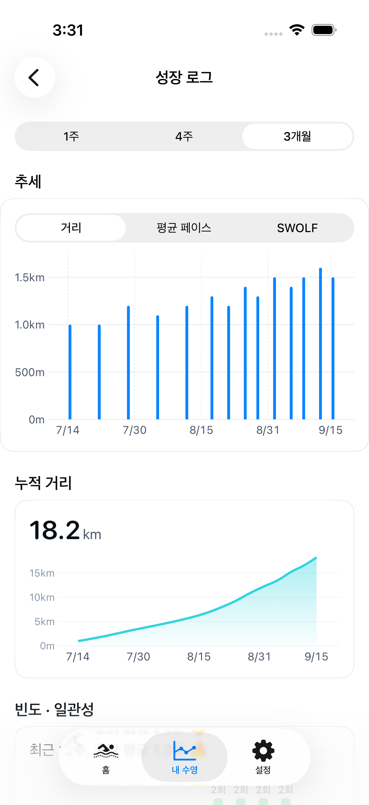

- 01다음 수영을 준비하고기록과 프로필로 세션 설계
- 02나의 수영에 집중하고Watch로 진행과 휴식 확인
- 03쌓여가는 변화를 보고기록 분석과 성장 추세
수영 전부터, 수영 후까지
한 번의 수영이
다음 수영의 방향이 되도록.
기록을 바탕으로 준비하고, 나에게 맞게 조절하고,
다시 돌아보는 흐름을 하나로 연결합니다.
홈 · 다음 세션
오늘의 수영,
시작 전에 그려보세요.
지난 기록과 내 프로필을 바탕으로 워밍업, 메인 세트, 쿨다운을 추천합니다. 오늘의 목표 거리와 수영장 길이에 맞춰 구성을 다듬어 보세요.
- 영법·거리·반복·휴식을 직접 편집
- 목표 거리와 세션 성격을 바꿔 재설계
- 마음에 드는 구성은 내 템플릿으로 저장
Apple Watch · 운동 진행
수영장에서는,
손목에서 흐름을 확인하세요.
iPhone에서 준비한 세션을 Watch에서 받아 시작합니다. 지금 몇 번째 세트인지, 얼마나 쉬면 되는지 확인하며 나의 페이스로 이어가세요.
- 세트·반복 진행과 수영 거리 확인
- 직전 구간 페이스·심박수·휴식 표시
- 운동을 마치면 Apple 건강에 기록 저장
내 수영 · 기록과 성장
조금씩 달라지는
나의 수영을 발견하세요.
한 번의 기록에서는 페이스와 수영 효율, 심박 분포를 살펴보고, 쌓인 기록에서는 시간에 따른 변화를 확인하세요. 지난 수영이 다음 추천의 바탕이 됩니다.
- 최근 기록과 달력에서 수영 돌아보기
- 세션별 페이스·SWOLF·심박 존 분석
- 1주·4주·3개월로 성장 추세 확인

화면은 현재 앱에서 촬영했으며, 수영 기록은 이해를 돕기 위한 예시입니다. 분석 항목은 건강 기록에 포함된 데이터에 따라 달라집니다.
처음 쓰는 날에도
아직 기록이 없어도,
첫 수영을 준비할 수 있어요.
수영 경력, 주간 빈도, 주 영법, 평소 페이스.
내 수영에 관한 몇 가지를 알려주면 프로필을 바탕으로 세션을 추천합니다.
건강 기록은 나중에 연결해도 괜찮습니다. 수영이 쌓이면 나의 변화를 함께 살펴보세요.
나의 리듬으로,
꾸준히 이어가는 수영.
물속에서 느꼈던 집중이 다음 수영까지 이어지도록.
준비는 차분하게, 기록은 의미 있게.
아직 수영 기록이 없어도 시작할 수 있나요?
네. 처음 입력한 수영 경력·빈도·주 영법·페이스를 바탕으로 세션을 추천합니다. 건강 데이터 연동은 나중에 할 수 있고, 수영 기록이 쌓이면 분석과 성장 추세를 확인할 수 있습니다.
수영 기록이 보이지 않아요.
먼저 iPhone의 건강 앱에 수영 기록이 있는지 확인하세요. 건강 앱 → 요약 → 프로필 → 개인정보 보호의 앱 → SwimFlow에서 읽기 권한을 확인한 뒤, SwimFlow의 설정 → 데이터 재동기화를 실행해 주세요. Watch에서 저장한 기록은 iPhone의 건강 앱에 반영되기까지 시간이 걸릴 수 있습니다.
Watch가 응답 대기 중이라고 나와요.
Watch 응답 대기는 연결이 끊겼다는 뜻만은 아닙니다. 페어링된 Watch에 SwimFlow가 설치되어 있는지 확인하고 Watch 앱을 열어 주세요. iPhone에서 보낸 세션이 Watch에 표시되는지 확인한 뒤 시작하세요.
앱을 삭제하면 기록도 사라지나요?
앱에 저장한 프로필·템플릿·세션 구성은 삭제될 수 있으므로 문제 해결을 위해 먼저 앱을 삭제하지 마세요. Apple 건강에 저장된 운동은 별도로 남아 있으며, 읽기 권한을 허용하면 다시 불러올 수 있습니다. SwimFlow는 자체 계정 백업이나 기기 간 클라우드 동기화를 제공하지 않습니다.
데이터가 외부로 전송되나요?
수영 분석과 세션 설계는 기기에서 이루어집니다. iPhone은 건강 기록을 읽고, Watch는 직접 측정한 운동을 Apple 건강에 저장합니다. 제품 개선을 위해 TelemetryDeck에 사용 이벤트와 일부 운동 요약값(거리·시간), 앱·기기 정보와 해시 처리된 식별자가 전송됩니다. 자세한 항목과 문의 방법은 개인정보처리방침에서 확인할 수 있습니다.
당신의 다음 수영을 준비하고 있어요.
App Store 출시 준비 중 · iOS 18 이상 / watchOS 11 이상
Watch 운동에는 수영을 지원하는 Apple Watch와 페어링된 iPhone이 필요합니다.